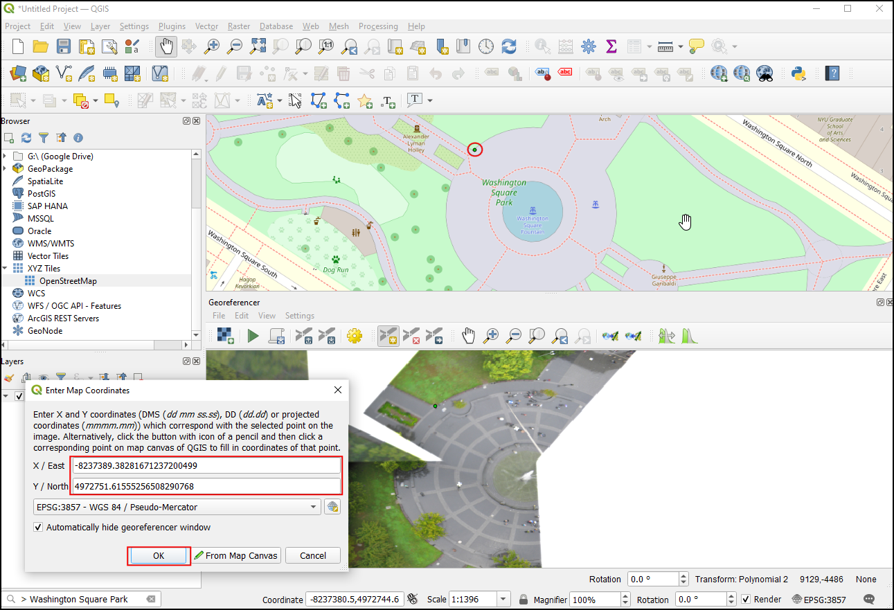

زمین مرجع کردن عکس هوایی (QGIS)¶
در آموزش زمین مرجع کردن نقشه شیت توپوگرافی اسکن شده (QGIS3)، ما به فرآیند پایه ارجاع جغرافیایی در QGIS پرداختیم. این روش شامل خواندن مختصات از نقشه اسکن شده و وارد کردن دستی آنها به عنوان نقاط کنترلی بود. با این حال، بسیاری از اوقات، ممکن است مختصات را روی نقشه خود چاپ نکنید، یا سعی می کنید یک تصویر را ارجاع دهید. در این صورت، می توانید از منبع داده های جغرافیایی دیگر به عنوان ورودی خود استفاده کنید. این آموزش به شما یاد می دهد که چگونه از منابع داده باز موجود در فرآیند ارجاع جغرافیایی خود استفاده کنید.
نمای کلی تمرین¶
ما یک تصویر بالن با وضوح بالا را با استفاده از زمین مرجع از OpenStreetMap ارجاع خواهیم داد.
سایر مهارتهایی که یاد خواهید گرفت¶
استفاده از لایه های کاشی XYZ به عنوان نقشه پایه در QGIS.
با استفاده از ژئوکدر داخلی Nominatim.
تنظیم یک مقدار No-Data تعریف شده توسط کاربر برای یک لایه.
اخذ داده¶
در این آموزش، از تصاویر بادبادک و بادکنک جمع آوری شده توسط "آزمایشگاه عمومی <https://publiclab.org/archive>" استفاده خواهیم کرد. آنها نسخههای ژئورفرنسشده تصاویر را نیز در دسترس قرار میدهند، اما ما یک تصویر JPG غیرژئورفرنسشده را دانلود میکنیم و فرآیند ارجاع جغرافیایی آن را در QGIS طی میکنیم.
دانلود تصویر JPG Washington Square Park, New York. می توانید روی دکمه JPG کلیک راست کرده و Save link as... را انتخاب کنید
برای راحتی کار، میتوانید مستقیماً یک کپی از مجموعه داده را از لینک زیر بارگیری کنید:
مراحل¶
We will use a basemap from OpenStreetMap to capture the coordinates for georeferencing. QGIS3 comes with built-in support for tile layers. These are commonly known as 'XYZ' layers since they are made using individual map tiles for each zoom level (z) on a x,y coordinate grid. You can find the
OpenStreetMaplayer under XYZ Tiles in the Browser Panel. Drag the layer to the main canvas. Once loaded, note the Coordinate Reference System (CRS) for this layer in the bottom-right corder. It is set asEPSG 3857 Pseudo Mercator. This is important because the coordinates we infer from this layer during georeferencing will be in this CRS.

توجه
وبگاه this page برای کسب اطلاعات در موردXYZ و چگونگی افزودن سایر لایه های پایه بیشتر نکاه کنید.
تصویری که ما به زمین ارجاع می دهیم مربوط به "پارک میدان واشنگتن، نیویورک" است. برای پیدا کردن مکان این پارک روی نقشه، میتوانید زوم/پان کنید. اما این دست و پا گیر است و عملی نیست. از QGIS نسخه 3.20 به بعد، پشتیبانی داخلی برای ژئوکدر Nominatim مبتنی بر OpenStreetMap وجود دارد. روی نوار جستجو در پایین سمت چپ پنجره QGIS کلیک کنید. برای استفاده از آن به عنوان پیشوند geocoder، محل جستجو را با
>جستجو کنید. با جستجوی "> Washington Square Park" لیستی از آدرسها برای انتخاب ظاهر میشود. روی آدرس اول کلیک کنید.

بوم نقشه در مرکز میدان پارک خواهد بود. حالا بیایید ارجاع جغرافیایی را شروع کنیم. Georeferencer را از :menuselection:`Raster --> Georeferencer اجرا کنید
توجه
از QGIS نسخه 3.26 به بعد، Georeferencer را می توان از راه اندازی کرد.

برای ارجاع جغرافیایی یک تصویر هوایی، باید نقاط مختصات را از OpenStreetMap انتخاب کنیم، بنابراین اجازه دهید ابتدا ابزار Georeferencer را به پنجره اصلی QGIS متصل کنیم. Configure Georeference را از انتخاب کنید.


پنجره Georeferencer در پایین پنجره اصلی QGIS قرار می گیرد. اجازه دهید فایل تصویر را با کلیک کردن روی نماد :guilabel:'Open Raster' در پنجره :guilabel:'Georeferencer' بارگذاری کنیم و به فایل JPG دانلود شده بروید. روی Open. کلیک کنید

قبل از اضافه کردن نقاط کنترل زمینی (GCP)، باید تنظیمات تبدیل را تعریف کنیم. روی نماد Transformation Settings کلیک کنید تا کادر گفتگوی Transformation Settings باز شود. :guilabel:'نوع تبدیل' را به عنوان 'چند جمله ای 2' انتخاب کنید. برای آشنایی با انواع مختلف تبدیل و کاربردهای آنها، به "مستندات QGIS <https://docs.qgis.org/testing/en/docs/user_manual/working_with_raster/georeferencer.html?highlight=georeferencer#available-transformation-algorithms>" مراجعه کنید. . همانطور که قبلاً اشاره شد، نقشه پایه ما در "EPSG 3857 Pseudo Mercator" CRS است، بنابراین آن را به عنوان :guilabel:"CRS هدف" تنظیم کنید. میتوانید نام :guilabel:'Output Raster' را به صورت پیشفرض بگذارید و ``LZW` را به عنوان Compression انتخاب کنید. :guilabel:«از 0 برای شفافیت در صورت نیاز استفاده کنید» را بررسی کنید. :guilabel:`ذخیره امتیازات GCP را بررسی کنید تا امتیازها را به عنوان یک فایل جداگانه برای اهداف بعدی ذخیره کنید. مطمئن شوید که گزینه :guilabel:'Load in QGIS when done' تیک خورده باشد. روی OK کلیک کنید.

اکنون بر روی دکمه Add Point در نوار ابزار کلیک کنید و یک مکان به راحتی قابل شناسایی روی تصویر انتخاب کنید. گوشه ها، تقاطع ها، قطب ها و غیره نقاط کنترل خوبی را ایجاد می کنند. هنگامی که روی تصویر در یک مکان کنترل کلیک کنید، یک پاپ آپ خواهید دید که از شما می خواهد مختصات نقشه را وارد کنید. روی دکمه :guilabel:`از بوم نقشه کلیک کنید.

در لایه «OpenStreetMap»، روی مکان دقیق لایه مرجع کلیک کنید. مختصات به صورت خودکار از کلیک شما بر روی بوم نقشه پر می شود. روی :guilabel:"Ok" کلیک کنید.

توجه
نکته: هنگام انتخاب GCP در یک ساختمان، همیشه پایین ساختمان را انتخاب کنید. اکثر تصاویر هوایی و ماهواره ای دارای ساختمان های کج هستند، بنابراین انتخاب نقطه ای روی پشت بام باعث بروز خطا می شود.
به همین ترتیب، حداقل 6 نقطه از تصویر را انتخاب کنید و مختصات آنها را از لایه مرجع اضافه کنید. هنگامی که حداقل تعداد نقاط مورد نیاز برای تبدیل را اضافه کردید، متوجه خواهید شد که GCPها اکنون مقادیر خطای «dX»، «dY» و «Residual» غیر صفر دارند. اگر یک GCP خاص مقادیر خطای غیرعادی بالایی داشته باشد، معمولاً به معنای خطای انسانی در وارد کردن مقادیر مختصات است. بنابراین می توانید آن GCP را حذف کرده و دوباره آن را ضبط کنید.

هنگامی که از GCP ها راضی شدید، روی Start georeferencing کلیک کنید. این فرآیند تاب برداشتن تصویر با استفاده از GCP ها و ایجاد شطرنجی هدف را آغاز می کند. پس از اتمام فرآیند، لایه بارگذاری شده در QGIS را مشاهده خواهید کرد. پنجره Georeferencer را ببندید.

حالا روی نماد :guilabel:`Open layer styling panel کلیک کنید و به تب :guilabel:`Transparency بروید. "255" را به عنوان :guilabel:"مقدار بدون داده اضافی" اضافه کنید. با این کار حاشیه سفید اطراف تصویر حذف می شود. اکنون تصویر جغرافیایی خود را خواهید دید که به خوبی روی لایه پایه قرار گرفته است.

{kind=link}
توجه
تصاویر 8 بیتی (بایتی) دارای ارزش پیکسلی در دامنه 0-255 هستند، عدد صفر به رنگ سیاه و 255 به رنگ سفید نمایش داده می شود.
If you want to give feedback or share your experience with this tutorial, please comment below. (requires GitHub account)